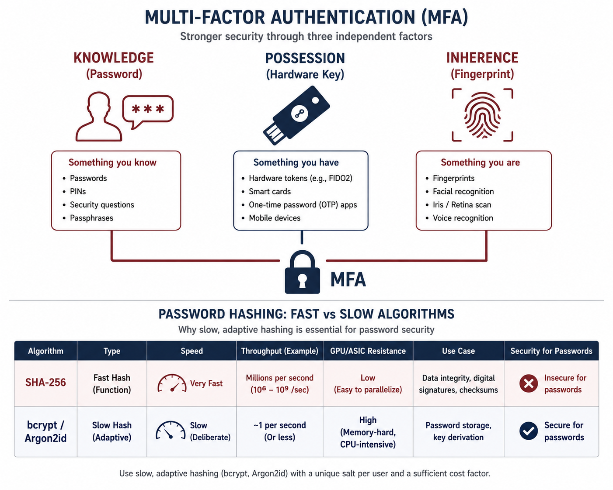

Topic 1.2
Suspicious Website Logins
Chapter Contents
- I. Search Spaces, Human Passwords, and the Offline Attack
- II. How Credentials Are Stored, Verified, and Stolen
- III. Case Studies: LinkedIn, 23andMe, Colonial Pipeline, Cloudflare and Twilio
- IV. Hardening Authentication: Hashing, Breach Screening, TOTP, Rate Limits
- V. References and Further Reading
- VI. Interactive Lab, Entropy and Crack-Time Calculator
AP Cybersecurity Alignment
Unit 1: Introduction to Security · Topic 1.2, Suspicious Website Logins
- 1.2.A Analyze Risk
Recognize the common signs that an account is the target of a password attack. - 1.2.B Analyze Risk
Explain how adversaries take advantage of weak authentication practices. - 1.2.C Mitigate Risk
Explain the measures that make authentication stronger.
Objective codes follow the AP Cybersecurity Course Framework (College Board, AP Career Kickstart). Objectives are paraphrased here, not quoted.
I. Search Spaces, Human Passwords, and the Offline Attack

Identity verification and access control within information systems rely on the classification of authentication factors into three canonical dimensions: knowledgeKnowledge Factor (Something You Know)The oldest authentication factor, a shared secret: a password, PIN, passphrase, or answer to a security question. The fundamental problem: secrets can be stolen, guessed, phished, or leaked in data breaches. Once a secret is known to an attacker, it provides zero protection. SP 800-63B-3 called these "memorized secrets" in §5.1.1; the 2025 revision, SP 800-63B-4, moves the material to §3.1.1 and simply calls them passwords. Both forbid security questions and mandatory periodic password changes. (something the user knows, such as passwords, passphrases, or PINs), possessionPossession Factor (Something You Have)A physical device that proves who you are, a hardware security key (YubiKey), a smart card, your phone running an authenticator app, or a one-time password token. Much harder to steal than a password because the attacker needs physical access to the device. NIST SP 800-63B-4 §3.2 defines the possession-factor authenticator types. FIDO2 hardware keys are the strongest possession factor, they also prevent phishing via domain binding (see Topic 1.1). (something the user has, such as physical security keys, cryptographic smart cards, or hardware tokens), and inherenceInherence Factor (Something You Are)Biometric characteristics, fingerprints, facial geometry, iris patterns, voice, or even typing rhythm. Extremely convenient (you can't forget your fingerprint) but has irreversibility: if a password is stolen you change it, but you cannot change your fingerprints. NIST SP 800-63B-4 §3.2.3 covers biometrics, and permits them only in combination with a physical authenticator, never as a standalone factor. ISO/IEC 30107 defines Presentation Attack Detection (PAD), the technology that prevents fake fingerprints or photos from fooling biometric sensors. See Topic 1.4 for deepfake attacks on facial biometrics. (something the user is, representing physiological or behavioral biometrics). Despite the theoretical security advantages of multi-factor authentication (MFA)MFA, Multi-Factor AuthenticationRequiring two or more DIFFERENT factor categories before granting access. Combining a password (knowledge) with a hardware key (possession) is MFA. Combining two passwords is NOT MFA, they're the same category. The attacker must now steal from two completely separate attack surfaces simultaneously. NIST SP 800-63B-4 ties authenticator requirements to Authentication Assurance Levels; AAL2 and above require multi-factor authentication. The 2021 US Executive Order on Cybersecurity (EO 14028) mandated MFA across all federal agencies within 180 days. architectures that integrate all three dimensions, knowledge-based authentication continues to serve as the baseline protection mechanism for the vast majority of consumer and enterprise portals.
This reliance on knowledge-based authentication introduces a systemic vulnerability: the offline cryptographic compromise. When a database breach occurs, threat actors do not attempt online brute-forceBrute-Force AttackTrying every possible password combination systematically until finding the right one. Like trying every key on a giant keyring. Online brute force against a live login portal is slow (rate limiting allows only a few tries) and noisy (easily detected). Offline brute force against a stolen hash database is fast (billions/second) and silent. Measured on one RTX 4090 (Hashcat v6.2.6): 164.1 GH/s for MD5, 21.98 GH/s for SHA-256, but only 184 kH/s for bcrypt at cost 5 and roughly 1,437 H/s at cost 12. The gap between a fast hash and a correctly parameterized KDF is about seven orders of magnitude, and it is bought entirely by the cost parameter. attacks against active application interfaces, which are monitored by Intrusion Detection Systems (IDS), firewalls, and rate-limiting modules. Instead, they exfiltrate the stored password hashesPassword HashA one-way mathematical transformation of a password: a fixed-length string of characters that cannot (in theory) be reversed. Websites store hashes, not passwords, so if the database is stolen, attackers must crack the hashes. The problem: fast hash functions (SHA-256) make cracking trivially easy. Example: SHA-256("password") = 5e88489... always. This predictability enables rainbow table attacks: pre-compute the hash for every common password, then look up stolen hashes instantly. Salting (a random prefix) defeats this. and perform local, high-speed dictionary and combinatoric attacks using specialized hardware clusters equipped with GPUsGPU, Graphics Processing UnitOriginally designed to render video game graphics, GPUs have thousands of small parallel cores that are perfect for the massive parallelism required to crack passwords, each core can try a different password simultaneously. A consumer NVIDIA RTX 4090 benchmarks at 164.1 billion MD5 hashes per second and 288.5 billion NTLM hashes per second. This is why fast hash functions are completely inadequate for password storage. Password cracking tools: Hashcat (GPU-based), John the Ripper (CPU-based). A single RTX 4090 can crack an 8-character Windows NTLM hash in under 3 hours. See hashcat.net benchmark tables for all algorithms. or Application-Specific Integrated Circuits (ASICs).
Traditional cryptographic hashing algorithms, including MD5MD5, Message Digest 5 (Cryptographically Broken)A 1992 hash function that produces a 128-bit digest. Completely unsuitable for passwords, one RTX 4090 benchmarks at 164 billion MD5 hashes per second. Also cryptographically broken: collision attacks are trivially possible (two different inputs that produce the same hash). Still (incorrectly) used in some legacy systems. Rivest, R. (1992). RFC 1321. MD5's collision resistance was broken by Wang & Yu in 2004. NIST deprecated MD5 for security applications in 2011. Legacy databases using MD5 for passwords can be cracked in seconds with modern hardware., SHA-1SHA-1, Secure Hash Algorithm 1 (Deprecated)A 1995 hash function (160-bit output) designed by the NSA. Faster than MD5 but still catastrophically weak for passwords: a GPU can compute 50 billion SHA-1 hashes per second. Also cryptographically broken for collision resistance (Google's SHAttered attack, 2017). LinkedIn used SHA-1 without salts in 2012, and a crowdsourced effort worked through the great majority of the published list within days. NIST formally deprecated SHA-1 for digital signatures in 2011 (FIPS 180-4). Google demonstrated the first practical SHA-1 collision on Feb 23, 2017 (shattered.io). For passwords: use bcrypt, Argon2id, or scrypt instead., and SHA-256, are mathematically designed for operational throughput and latency minimization. While highly efficient for verifying the integrity of large datasets, these algorithms are catastrophically insecure for credential storage. A modern GPU cluster can compute billions of SHA-256 hashes per second, allowing low-entropy passwords to be cracked in milliseconds. To mitigate this threat, computer systems utilize key-stretchingKey StretchingDeliberately making a hash function slow and expensive to compute, by iterating the hashing process thousands or millions of times. Like adding a time lock to a safe, the attacker still has to try every combination, but each attempt now takes 350ms instead of 0.00000001 seconds. Work an example: a ten-character random password over 94 symbols has $94^{10} \approx 5.4 \times 10^{19}$ candidates, so an expected search of $2.7 \times 10^{19}$; at 350 ms per attempt on one machine that is about $3 \times 10^{11}$ years. Key stretching algorithms: bcrypt (Provos & Mazières, 1999), PBKDF2 (RFC 8018), scrypt (Percival, 2009), Argon2id (RFC 9106, 2021). Argon2 won the Password Hashing Competition in 2015. NIST SP 800-63B-4 §3.1.1.2 requires an approved password hashing scheme with a salt of at least 32 bits and cost factors raised over time. algorithms. Threat actors exploit human password-reuse habits through credential stuffingCredential StuffingAn automated attack that takes a list of stolen username/password pairs from one breach and tests them on other websites. If someone uses the same password for LinkedIn and their bank, and LinkedIn is breached, the attacker's bot will automatically try that password on the bank site too. Responsible for billions of account takeovers annually. Success rates are low per attempt and enormous in aggregate: industry figures commonly put valid-pair hit rates between 0.1% and 2%, which against a million-pair list is thousands of account takeovers. The 2023 23andMe breach is the canonical case, 14,601 accounts entered with correct credentials, no exploit involved. See the OWASP Credential Stuffing Prevention Cheat Sheet. Defenses: breach-corpus screening at registration, MFA, and detection on aggregate rather than per-account signals.: automated bot campaigns that replay compromised credential lists from historical breaches across unrelated service portals.
1. The Arithmetic of a Search Space
A password's resistance to guessing is not a property of the characters it contains. It is a property of the process that generated it. If a secret is drawn uniformly at random from a set of $N$ equally likely possibilities, its Shannon entropyShannon EntropyA measure, in bits, of how much uncertainty there is in a random value. If a value is drawn uniformly from $N$ possibilities, its entropy is $\log_2 N$ bits, one bit per perfect coin flip's worth of uncertainty. Shannon entropy is the right measure only when every possibility is equally likely; for human-chosen passwords, which are wildly non-uniform, it systematically overstates strength. Shannon, C.E. (1948). A Mathematical Theory of Communication. Bell System Technical Journal, 27, 379–423. For the non-uniform case, see Massey (1994) on guessing entropy and Bonneau (2012) on partial-guessing metrics. is $$H = \log_2 N \text{ bits.}$$ For a password of length $L$ drawn character-by-character from an alphabet of size $A$, the search space is $N = A^L$ and $$H = L \log_2 A.$$ Work the numbers for the two generation strategies people actually use.
Strategy one: random characters. The printable ASCII range that most keyboards produce contains 94 characters (decimal 33 through 126, plus space if the site permits it). $\log_2 94 = 6.554$ bits per character. An eight-character random string therefore carries $$H = 8 \times 6.554 = 52.4 \text{ bits}, \qquad N = 94^8 \approx 6.10 \times 10^{15}.$$
Strategy two: random words. The EFF long wordlist contains 7,776 words, a number chosen because $7776 = 6^5$, so five rolls of a die select one word without bias. Each word contributes $\log_2 7776 = 12.925$ bits. Six words give $$H = 6 \times 12.925 = 77.5 \text{ bits}, \qquad N = 7776^6 \approx 2.21 \times 10^{23}.$$ The six-word passphrase is roughly 36 million times harder to guess than the eight-character string, and considerably easier to type and remember. This is the entire empirical basis for the modern preference for length over character-class complexity.
Tr0ub4dor&3 looks, to a naive character-counting estimator, like eleven characters over a 94-symbol alphabet: 72 bits. Against a real attacker it is worth almost nothing, because it was not generated by sampling that space. It was generated by taking a dictionary word and applying a small, extremely common set of substitution rules. Cracking tools model exactly this: Hashcat's rule engine applies transformations such as sa@ so0 se3 $! to every entry of a wordlist, so the candidate space the attacker actually searches is (dictionary size) × (rule count), which for a 14-million-word list and a 65,000-rule set is under $10^{12}$ — four orders of magnitude smaller than the naive estimate, and reachable in minutes on one GPU. Any entropy figure computed from the characters of a password you were shown is a fiction. The only defensible figure is computed from the procedure that produced it.
2. What Human-Chosen Passwords Are Actually Worth
The theoretical figures above describe randomly generated secrets. Human-chosen passwords obey a very different distribution, heavily skewed, with a small number of extremely common choices absorbing a large share of the population. Measuring the strength of such a distribution with Shannon entropy is misleading, because Shannon entropy averages over the whole distribution while an attacker attacks only its head.
Joseph Bonneau addressed this directly in The Science of Guessing (IEEE Symposium on Security and Privacy, 2012), analyzing an anonymized corpus of roughly 70 million Yahoo! passwords. He introduced $\alpha$-guessworkPartial Guessing Metrics ($\alpha$-guesswork)A family of measures that ask a different question from Shannon entropy: not "how uncertain is the whole distribution?" but "how much work must an attacker do to break a given fraction $\alpha$ of accounts?" This matches how real attacks are economically evaluated, an attacker cracking a stolen database does not need every password, only enough to be profitable. Bonneau, J. (2012). The Science of Guessing: Analyzing an Anonymized Corpus of 70 Million Passwords. IEEE S&P 2012, pp. 538–552. Builds on Massey (1994) and Pliam (2000)., which asks how much work an attacker needs to compromise a chosen fraction $\alpha$ of accounts rather than how uncertain the distribution is on average. His result for the weakest quarter of the corpus is the number worth carrying: attacking to a 25% success rate required effort equivalent to searching a uniform space of about $2^{17.6}$ — roughly 200,000 candidates. Not $2^{52}$. Two hundred thousand.
That gap is the reason password policy cannot be reasoned about from the theoretical formula alone, and the reason breach-corpus screening (rejecting a password because it has been seen before, regardless of how complex it looks) is a stronger control than any composition rule.
3. Putting a Clock on the Offline Attack
Cracking throughput is measured, not estimated. The figures below come from a published Hashcat v6.2.6 benchmark of a single NVIDIA RTX 4090, a consumer card:
Mode 1000 NTLM 288.5 GH/s (2.885e11 guesses/sec)
Mode 0 MD5 164.1 GH/s (1.641e11)
Mode 100 SHA1 50.64 GH/s (5.064e10)
Mode 1400 SHA2-256 21.98 GH/s (2.198e10)
Mode 8900 scrypt (N=16384) 7126 H/s (7.126e3)
Mode 3200 bcrypt (cost 5) 184.0 kH/s (1.840e5)
bcrypt (cost 12) ~1437 H/s derived: 184000 / 2^(12-5)Note the last line. bcrypt's cost parameter is an exponent, so raising it from the benchmark's default of 5 to the deployed value of 12 divides throughput by $2^7 = 128$. Now price the eight-character random password ($N = 6.10 \times 10^{15}$) against each. Expected work to find a uniformly random secret is half the space, $N/2 = 3.05 \times 10^{15}$:
- Unsalted SHA-256: $3.05 \times 10^{15} \div 2.198 \times 10^{10} = 1.39 \times 10^{5}$ seconds $\approx$ 38.5 hours on one card. On an eight-GPU rig, under five hours.
- bcrypt at cost 12: $3.05 \times 10^{15} \div 1437 = 2.12 \times 10^{12}$ seconds $\approx$ 67,000 years on the same card.
The ratio is about $1.5 \times 10^{7}$. That factor, fifteen million, is what a correctly chosen key derivation function buys, and it is bought entirely by making one hash evaluation expensive.
II. How Credentials Are Stored, Verified, and Stolen
1. Password Storage: Salt, Pepper, and What the Verifier Keeps
A verifier faces a constraint that is easy to state and awkward to satisfy: it must be able to confirm that a submitted password is correct, while holding nothing that lets an attacker who steals its entire database recover that password. The construction that satisfies it is a salted, deliberately slow, one-way function. Each element does distinct work.
The salt destroys precomputation. A salt is a unique, non-secret random value stored alongside each digest and mixed into the hash input. NIST SP 800-63B-4 §3.1.1.2 states that "the salt SHALL be at least 32 bits in length"; modern KDFs use 128 bits by default. Without a salt, an attacker can precompute the hash of every plausible password once and reuse that table against every breached database forever. This is the time–memory trade-offTime–Memory Trade-Off (Rainbow Tables)Martin Hellman showed in 1980 that a cryptanalyst can trade storage for computation: precompute chains that alternate a hash function $h$ with a "reduction" function $r$ mapping digests back into the password space, and store only the first and last element of each chain. To invert a target digest, apply $r$ and $h$ repeatedly until you land on a stored chain end, then walk that chain from its start to recover the preimage. Philippe Oechslin's 2003 refinement uses a different reduction function at each column, which sharply reduces chain merges and made the technique practical at scale. Hellman, M. (1980). A Cryptanalytic Time-Memory Trade-Off. IEEE Transactions on Information Theory, 26(4), 401–406. Oechslin, P. (2003). Making a Faster Cryptanalytic Time-Memory Trade-Off. CRYPTO 2003, LNCS 2729, 617–630. that rainbow tables exploit. A per-credential salt makes the precomputation useless: the attacker would need a separate table per user, which costs strictly more than attacking each user directly. The salt also destroys a second, subtler leak, without it, two users with identical digests demonstrably share a password, which turns a breach dump into a free frequency analysis of the password distribution.
The cost parameter destroys throughput. Covered in detail in subsection 4 below.
The pepper moves one secret out of the database. A pepper is a single site-wide secret, identical for all users, held somewhere the database is not, an HSM, a KMS, or at minimum an application config that a SQL injection cannot read. It is applied as a keyed operation: either an HMAC before the KDF, or symmetric encryption of the digest afterward. Its value is narrow but real: it means a database-only compromise (the most common kind) yields ciphertext the attacker cannot even begin to crack. Its cost is also real: peppers cannot be rotated without rehashing, and a leaked pepper reduces you to the unpeppered case with no warning.
Dropbox published the layered version of this design in 2016: the password is first hashed with SHA-512 (reducing any input to a fixed 64 bytes), then run through bcrypt at cost 10, then the resulting digest is encrypted with AES-256 under a key held separately from the credential store. The SHA-512 prehash is not decoration. It exists because bcrypt silently ignores input beyond 72 bytes, for a reason we will come to.
The stored artifact is self-describing. Both bcrypt and Argon2 emit a variant of the modular crypt format, which packs algorithm, parameters, salt, and digest into one printable string:
bcrypt
$2b$12$LQv3c1yqBWVHxkd0LHAkCOYz6TtxMQJqhN8/LewKyDA5wZ0Ib.7HK
| | | |
| | | +-- 31 chars: 184-bit digest, bcrypt's own base64
| | +------------------------- 22 chars: 128-bit salt, same alphabet
| +---------------------------- cost = 12 -> 2^12 = 4096 key-schedule rounds
+------------------------------- version tag: 2b (current), 2a/2y legacy, 2x buggy
Argon2id
$argon2id$v=19$m=65536,t=3,p=4$c29tZXNhbHRzb21lc2FsdA$RdescudvJCsgt3ub+b+dWRWJTmaaJObG
| | | | |
| | | | +-- base64 tag (digest)
| | | +------------------------- base64 salt (no padding)
| | +----------------------------------------- m KiB, t passes, p lanes
| +---------------------------------------------- v=19 = 0x13 = Argon2 v1.3
+------------------------------------------------------- variant: argon2id
Note: bcrypt's base64 alphabet is "./A-Za-z0-9" -- NOT RFC 4648 standard base64.
Decoding one of these strings with a standard base64 library produces garbage.Because the parameters travel with the digest, a verifier can upgrade its work factor incrementally: on each successful login, check whether the stored parameters are below current policy and, if so, rehash the plaintext the user just supplied before discarding it. Every mainstream library exposes this, argon2.PasswordHasher.check_needs_rehash(), PHP's password_needs_rehash(), and it is the only way to migrate a live credential store without forcing a global password reset.
m=47104 (46 MiB), t=1, p=1 and m=19456 (19 MiB), t=2, p=1 and m=7168 (7 MiB), t=5, p=1 are presented as roughly equal-security choices that trade RAM against CPU, so an operator can pick the one their hardware can actually sustain. Choosing a work factor is a capacity-planning exercise with a security constraint attached, not a security decision with a performance footnote. Benchmark it on the machine that will run it, target the highest cost your p99 login latency budget tolerates, and revisit annually as hardware improves.
2. One-Time Passwords: The HOTP Construction and Its Three Limits
Time-based one-time passwords are the most widely deployed second factor on the internet, and understanding precisely what they do and do not guarantee is the difference between deploying them intelligently and deploying them superstitiously.
The construction is defined in two documents. RFC 4226 specifies HOTP, an event-counter OTP; RFC 6238 specifies TOTP, which is HOTP with the counter replaced by a function of the clock. Both rest on HMAC (RFC 2104):
$$\mathrm{HMAC}(K, m) = H\big((K' \oplus \mathrm{opad}) \,\|\, H((K' \oplus \mathrm{ipad}) \,\|\, m)\big)$$
where $K'$ is the key padded to the hash's block size, $\mathrm{ipad}$ is the byte 0x36 repeated and $\mathrm{opad}$ is 0x5C repeated. The nested structure exists to defeat length-extension attacks on Merkle–Damgård hashes; it is why HMAC-SHA-1 remains sound for authentication even though bare SHA-1 is broken for collision resistance.
TOTP defines the counter as $$C = \left\lfloor \frac{T - T_0}{X} \right\rfloor$$ with $T$ the current Unix time, $T_0 = 0$ and the step $X = 30$ seconds by default (RFC 6238 §4.2). $C$ is encoded as an 8-byte big-endian integer and fed to HMAC. What comes back is 20 bytes; the code the user types is six digits. The reduction is RFC 4226 §5.3's dynamic truncationDynamic Truncation (RFC 4226 §5.3)Rather than always taking the first four bytes of the HMAC, HOTP uses the last nibble of the digest to choose which four bytes to take. This makes the mapping from digest to code depend on the whole digest, so an attacker cannot concentrate effort on predicting one fixed 32-bit window. The high bit of the selected word is masked off to sidestep signed-integer handling differences between platforms, a purely engineering concession baked into the standard. M'Raihi, D. et al. (2005). HOTP: An HMAC-Based One-Time Password Algorithm. IETF RFC 4226 §5.3.:
HS = HMAC-SHA-1(K, C) 20 bytes
1f 86 98 69 0e 02 ca 16 61 85 50 ef 7f 19 da 8e 94 5b 55 5a
^^
offset = HS[19] & 0x0F = 0x5A & 0x0F = 10 (last nibble selects the window)
P = HS[10..13] = 50 ef 7f 19
Snum = P & 0x7FFFFFFF = 0x50ef7f19 = 1357872921 (mask the top bit)
code = Snum mod 10^6 = 1357872921 mod 1000000 = 872921
^^^^^^ what the user types
RFC 6238 Appendix B test vector, verifiable in three lines of Python:
K = b"12345678901234567890" (ASCII)
T = 59 seconds -> C = floor(59/30) = 1
8-digit HMAC-SHA-1 TOTP = 94287082The forgery argument is straightforward. HMAC is a pseudorandom function under standard assumptions about the compression function, so to an adversary without $K$ the 31-bit value $\mathit{Snum}$ is indistinguishable from uniform. Guessing a six-digit code therefore succeeds with probability $10^{-6}$ per attempt, which is why RFC 4226 §7.3 makes throttling a normative requirement rather than an optimization: without it, $10^6$ attempts inside a 30-second window is a modest amount of traffic.
Three limits follow from the construction itself, and none of them is a bug:
- $K$ is symmetric. The verifier must hold the same seed the authenticator holds, in a form it can compute with. A breach of the verifier's seed store yields every user's second factor at once. Contrast this with WebAuthn, where the server holds only a public key and a breach yields nothing usable.
- Nothing binds the code to a destination. The HMAC input is a counter. It contains no reference to the site the user believes they are talking to, no channel binding, no transcript hash. A valid code for
bank.comis, byte for byte, a valid code for anyone who can present it tobank.comwithin the window. - It is transcribable by a human. Six digits fit in working memory, which is exactly what makes the factor usable, and exactly what makes it relayable, by a proxy or by a caller on the phone.
Limits two and three together are what NIST SP 800-63B-4 §3.2.5 has in mind when it defines phishing resistance as "the ability of the authentication protocol to prevent the disclosure of authentication secrets and valid authenticator outputs to an impostor verifier … without relying on the vigilance of the claimant." TOTP fails that definition by construction. It is still enormously better than nothing, it eliminates credential stuffing outright, because a stuffed password no longer suffices, but it does not survive a real-time proxy, as subsection 5 demonstrates.
3. WebAuthn: Origin Binding at the Byte Level
WebAuthnWebAuthn, Web Authentication APIA W3C browser standard (since 2019) that lets websites authenticate users via hardware keys or biometrics instead of passwords. The key innovation: authentication is cryptographically bound to a specific domain, making it immune to phishing. Your browser, your authenticator, and the website all participate in a 3-way cryptographic handshake. W3C WebAuthn Level 2 (2021). Supported natively in Chrome, Firefox, Safari, Edge. Backends: libfido2 (C), python-fido2, java-webauthn-server. Major deployments: Google, GitHub, Microsoft, Apple (Passkeys)., part of the FIDO2 framework, is an API built into modern web browsers that facilitates passwordless, phishing-resistant authentication using asymmetric cryptographyAsymmetric Cryptography (Public Key Cryptography)A cryptographic system with two mathematically related keys: a public key (anyone can have it) and a private key (secret, never leaves your device). Data signed with the private key can be verified by anyone with the public key, but only the private key owner can create valid signatures. Like a physical padlock: anyone can lock it with the public key (close it), but only the key owner can unlock it. RSA (1977): based on difficulty of factoring large primes. ECDSA: based on elliptic curve discrete logarithm. Ed25519: modern, compact, fast. WebAuthn uses P-256 (ECDSA) or Ed25519 for key pairs. Private key never leaves the authenticator device.. Unlike password protocols, WebAuthn credentials are bound to a specific originOrigin (Web Security)The combination of scheme + hostname + port that uniquely identifies a website. "https://bank.com" is a different origin from "https://evil-bank.com", even though they look similar in a rushed URL bar reading. The Same-Origin Policy and WebAuthn both use origin binding as a fundamental security boundary. Defined in RFC 6454 (The Web Origin Concept). Origin = scheme + "://" + host + ":" + port. WebAuthn stores the origin during registration and verifies it during authentication, if they don't match exactly, authentication fails. (domain). The registration and authentication transactions proceed as follows:
Client Browser Relying Party (Server)
| |
|--------- Request Auth Challenge --------->|
|<-------- Challenge, Origin, CredID -------|
| |
[Verify Origin] ← browser checks current URL vs registered origin
| |
[Prompt Authenticator] ← user touches key / scans fingerprint
| |
[Generate Challenge Signature using private key]
| |
|---------- Assert Signature -------------->|
| | [Retrieve Public Key from DB]
| | [Verify Origin matches registration]
| | [Verify Signature with Public Key]
|<--------- Access Granted/Denied ----------|The diagram above is where most treatments stop. The security argument only becomes visible one level down, in the exact bytes that get signed. The authenticator does not sign the challenge. It signs the concatenation $$M = \mathit{authenticatorData} \,\Vert\, \mathrm{SHA\text{-}256}(\mathit{clientDataJSON})$$ and the relying party verifies $\mathrm{Verify}(K_{\text{pub}}, \sigma, M)$. Both halves of $M$ carry identity information the attacker cannot alter, and this is the whole trick.
clientDataJSON (built by the BROWSER, not by the page's JavaScript)
{
"type": "webauthn.get",
"challenge": "k3Zq7nB2xW1pLQ8vRt0dHg", base64url, from the server, single-use
"origin": "https://bank.example.com", <-- the browser's own view of the URL bar
"crossOrigin": false
}
authenticatorData (built by the AUTHENTICATOR, 37 bytes for a plain assertion)
offset size field
------ ---- ----------------------------------------------------------------
0 32 rpIdHash SHA-256("bank.example.com")
1d 2e 8f ... the RP ID stored AT REGISTRATION TIME
32 1 flags bit0 UP user present (touch) = 1
bit2 UV user verified (PIN/biometric)= 1
bit3 BE backup eligible (passkey)
bit4 BS backed up (synced passkey)
bit6 AT attested credential data present
bit7 ED extension data present
33 4 signCount big-endian counter, e.g. 00 00 04 d2
[37...] attestedCredentialData / extensions, when AT or ED is set
signed message M = authenticatorData || SHA-256(clientDataJSON)
signature = ECDSA-P256 or Ed25519 or RS256 over M, using the credential private keyNow run an adversary-in-the-middle proxy against it. The victim is on https://bank.example.com.secure-verify.tld, a reverse proxy relaying every request to the real bank. The proxy forwards the genuine challenge and the page calls navigator.credentials.get(). Two independent things go wrong for the attacker:
- The browser writes the origin, and the page cannot touch it.
clientDataJSONis constructed by the user agent from its own address bar, not from any value the page supplies. It will read"origin":"https://bank.example.com.secure-verify.tld". That string is hashed into $M$ and signed. The relying party compares it against its expected origin, sees a mismatch, and rejects. The attacker cannot rewrite it after the fact, because rewriting it invalidates $\sigma$. - The authenticator never produces a signature at all. Before signing, the browser derives the RP ID from the current origin's registrable domain and passes it to the authenticator, which looks for a credential scoped to $\mathrm{SHA\text{-}256}$ of that RP ID. For
secure-verify.tldthere is no such credential. The call fails with a "no credentials available" error, the private key is never exercised. The failure happens in hardware, before any human judgment is involved.
signCount field is a secondary control: a hardware authenticator increments it on every assertion, so a relying party that sees the counter go backward has evidence the credential has been cloned. Synced passkeys deliberately report zero, which is why the backup-eligible and backup-state flags exist, they tell the relying party whether it is talking to a device-bound key or a key that lives in a cloud keychain, and therefore how much the counter is worth.
4. Inside the Key-Stretching Functions
bcryptbcrypt, The Workhorse Password HashA password hashing function created by Niels Provos and David Mazières in 1999, based on the Blowfish cipher. The key feature: a configurable "work factor" (cost parameter) that makes each hash computation exponentially slower as the factor increases. Designed to remain secure as computers get faster, just increase the cost. Provos, N. & Mazières, D. (1999). A Future-Adaptable Password Scheme. USENIX Annual Technical Conference. bcrypt is the default in Ruby on Rails, Symfony, Spring Security, and most modern web frameworks. Cost=12 is the 2024 OWASP recommendation. Work Factor Math
bcryptbcrypt Work FactorThe cost parameter $C$ in bcrypt controls how many iterations of the Blowfish key schedule are executed before the hash is returned. Each increment of $C$ doubles the computation time. Each increment doubles the work, so if $C=10$ costs about 100 ms then $C=12$ costs about 400 ms and $C=14$ about 1.6 s on the same hardware, benchmark rather than assume, since implementations and CPUs differ. For a human logging in, a few hundred milliseconds is imperceptible; for an attacker at $10^9$ candidates it is roughly 11 years of single-machine time at 350 ms each. The OWASP Password Storage Cheat Sheet sets the bcrypt floor at work factor 10 and directs operators to raise it as far as verification-server performance allows. was published by Niels Provos and David Mazières at USENIX ATC 1999 under the title A Future-Adaptable Password Scheme, and the title is the design brief. Their insight was that any fixed-cost hash becomes obsolete on a schedule set by Moore's law, so the cost must be a parameter carried in the output.
bcrypt is Blowfish with its key schedule deliberately abused. Ordinary Blowfish initializes an 18-word P-array and four 256-entry S-boxes from the hexadecimal digits of $\pi$, then folds in the key. bcrypt's EksBlowfishSetup ("expensive key schedule") does this, then enters a loop:
state = InitState() P-array + 4 S-boxes from the digits of pi
state = ExpandKey(state, salt, key) fold in BOTH salt and password
repeat 2^cost times: <-- the entire cost of the algorithm lives here
state = ExpandKey(state, 0, key)
state = ExpandKey(state, 0, salt)
ctext = "OrpheanBeholderScryDoubt" 192-bit constant, 3 x 64-bit blocks
repeat 64 times:
ctext = EncryptECB(state, ctext) Blowfish encryption under the derived state
return concat(cost, salt, ctext) output truncated to 184 bitsThe work factor is exponential, $\text{iterations} = 2^{C}$, so $C = 12$ runs 4,096 rounds of the key schedule. Each round rewrites the entire Blowfish state, and that state is the reason bcrypt resists GPUs: four S-boxes of 256 32-bit entries is exactly 4 KiB of randomly and constantly rewritten working memory per concurrent hash. Historically this exceeded the fast per-thread local memory available on GPU shader cores, forcing every cracking thread into slower shared or global memory and collapsing the parallelism that makes GPUs devastating against SHA-256. The measured consequence is in the benchmark table above: the same card that does $2.2 \times 10^{10}$ SHA-256 hashes per second manages roughly $1.4 \times 10^{3}$ bcrypt hashes at cost 12.
Wall-clock cost varies by CPU and implementation; benchmark rather than assume. On contemporary server hardware $C = 12$ typically lands in the low hundreds of milliseconds, and $C$ should be chosen from measurement on the machine that will run it, not copied from a blog post.
ExpandKey XORs key material into an 18-word P-array. Eighteen 32-bit words is 72 bytes, so bcrypt consumes at most 72 bytes of key and silently discards the rest. Most implementations do not warn. This bit a major identity provider in production: on 30 October 2024 Okta disclosed that its AD/LDAP Delegated Authentication had been generating a cache key by bcrypt-hashing the concatenation userId + username + password. When the username reached roughly 52 characters, the concatenation crossed 72 bytes and the password fell off the end entirely, so a stored cache entry could be matched by supplying only the username, with any password, provided the account had no MFA and the cache path was reached because AD/LDAP was unreachable. The defect was introduced on 23 July 2024 and remediated by switching the cache-key derivation to PBKDF2. Two lessons: never feed variable-length concatenations to bcrypt (pre-hash with SHA-256 or SHA-512 and encode the result, exactly as Dropbox does), and never use a password KDF as a general-purpose keying function without checking its input contract.
Argon2idArgon2id, Winner of the Password Hashing CompetitionCreated by Alex Biryukov et al. (2015), Argon2id won the 2015 PHC (Password Hashing Competition). The "id" variant is a hybrid: it uses data-dependent memory access (resistant to side-channel attacks) combined with data-independent passes. Three tunable parameters: memory cost (M), time cost (t), parallelism (p). RFC 9106 (2021), from the IRTF Crypto Forum Research Group, is the reference specification; §4 names t=1, p=4, m=2^21 (2 GiB) as its first recommended option and t=3, p=4, m=2^16 (64 MiB) as its second. OWASP publishes a lower, deployment-oriented ladder starting at m=47104 (46 MiB), t=1, p=1. Memory-Hard Parameters (RFC 9106)
Argon2id is a hybrid password hashing algorithm optimized to resist offline GPU and ASICASIC, Application-Specific Integrated CircuitA chip built for one specific purpose, like Bitcoin miners that can only mine Bitcoin, but do it extraordinarily fast. For password cracking, ASICs can be built to compute a specific hash function (like SHA-256) billions of times per second, far outpacing GPUs. Memory-hard algorithms like Argon2id defeat ASICs by requiring large amounts of RAM bandwidth, you can't silicon-accelerate memory bandwidth the same way you can silicon-accelerate pure computation. Bitcoin mining ASICs (e.g., Bitmain Antminer) achieve 100+ TH/s on SHA-256. Argon2id's memory requirement makes dedicated ASICs uneconomical since memory bandwidth cannot be cheaply scaled in parallel like computation. attacks by enforcing memory hardnessMemory HardnessA property of an algorithm that requires large amounts of RAM to compute, making it resistant to parallelization on GPUs and ASICs. GPUs have thousands of cores but share a limited memory bandwidth. If each hash attempt requires 64MB of RAM, a GPU with 8GB of RAM can only compute ~128 hashes simultaneously instead of thousands. This kills the GPU's parallel advantage. Memory-hard functions: Argon2id, scrypt (Percival 2009), balloon hashing. bcrypt is somewhat memory-hard but less so than Argon2id. The memory-hardness of Argon2id comes from its large memory matrix $B$ that must be filled and then accessed pseudo-randomly.. The algorithm consumes a specific memory matrix size $M$, preventing parallel processing because memory bandwidth limits GPU concurrency. The primary parameters are defined as:
- Memory cost ($m$): working memory in KiB. $m = 65536$ requests 64 MiB, allocated as 65,536 blocks of 1,024 bytes each.
- Time cost ($t$): number of passes made over the whole memory array.
- Parallelism ($p$): number of lanes, which may be filled concurrently.
Argon2 arranges its memory as a matrix $B$ of 1 KiB blocks, $p$ lanes by $q = m'/p$ columns, with the columns partitioned into four vertical slices. The first two blocks of each lane are seeded from $H_0$, a BLAKE2b digest over every parameter (password, salt, $m$, $t$, $p$, version, tag length, optional secret and associated data). Every subsequent block is produced by a compression function $G$ over two earlier blocks: $$B[i][j] = G\big(B[i][j-1],\; B[i'][j']\big)$$ where $B[i][j-1]$ is the immediately preceding block in the lane and $B[i'][j']$ is a reference block selected by the indexing rule. $G$ itself is built from the BLAKE2b round function: the 1 KiB block is viewed as an $8 \times 8$ matrix of 16-byte registers, the permutation is applied to every row and then to every column, and the result is XORed with the inputs. The construction is deliberately cheap in arithmetic and expensive in memory traffic.
The reference index is where the three Argon2 variants differ, and where the security argument lives. Argon2d chooses $B[i'][j']$ from the contents of the previous block, data-dependent addressing, maximally hostile to an attacker but leaking access patterns to a side channel. Argon2i derives the index from a counter stream independent of the data, side-channel-safe but weaker against trade-off attacks. Argon2id, the variant you should deploy, takes both: RFC 9106 §3.4.1.3 specifies that "if the pass number is 0 and the slice number is 0 or 1, then compute $J_1$ and $J_2$ as for Argon2i, else compute $J_1$ and $J_2$ as for Argon2d." The first half of the first pass, the window in which a co-resident process observing cache timing could learn something about the password, is data-independent; everything after it, once the memory is full of password-derived material, is data-dependent.
The memory hardness claim is a claim about a trade-off, not about an absolute. An attacker who allocates only $1/q$ of the requested memory can still compute the hash: he simply recomputes, on demand, the blocks he chose not to store. RFC 9106 §7.2 analyzes this. Because the reference blocks in Argon2d/id are chosen pseudorandomly from all previously computed blocks, each discarded block is likely to be needed later, and the recomputations cascade, the cost of halving memory is superlinear in the computation. The design goal is that the product of area and time on a custom chip, which is what an ASIC's economics reduce to, cannot be improved by spending silicon.
RFC 9106 §4 gives two concrete settings and calls both uniformly safe. The first recommended option is Argon2id with $t = 1$, $p = 4$, $m = 2^{21}$ (2 GiB), a 128-bit salt and a 256-bit tag. The second recommended option, for constrained environments, is $t = 3$, $p = 4$, $m = 2^{16}$ (64 MiB), same salt and tag sizes. Two gibibytes per login is unrealistic for a public web service at any scale; the second option, or one of OWASP's lower rungs, is what production systems actually run. Say so out loud in your threat model rather than quietly citing the RFC's first option and deploying its last.
5. Adversary-in-the-Middle Proxies, and Why the Prize Is the Cookie
The credential-harvesting page that simply captures a username and password into a text file is a museum piece. What replaced it is a reverse-proxy phishing kitAdversary-in-the-Middle (AiTM) Phishing KitA phishing server that does not imitate the target site, it relays to it. The victim's browser talks to the proxy; the proxy talks to the real site and forwards every byte in both directions, rewriting only the domain names in the HTML and headers. Because the victim is looking at pages generated by the genuine site, the visual tells that awareness training focuses on (broken styling, wrong logo, missing pages) are all absent. Open-source implementations have existed since 2018; commercial phishing-as-a-service kits industrialized them. MITRE ATT&CK T1557 (Adversary-in-the-Middle) and T1539 (Steal Web Session Cookie). Kuba Gretzky's Evilginx, first released 2017, is the canonical public implementation and is widely used in authorized red-team engagements.: a server that does not imitate the target site but relays to it, byte for byte, rewriting only hostnames in flight.
The consequence is that the visual authenticity checks people are trained on all pass, because the pages the victim sees really are generated by the real site. More importantly, the sequence defeats every shared-secret second factor:
victim proxy (attacker) real site
| | |
|-- GET /login ------------->|-- GET /login ---------------->|
|<-- real login page --------|<-- real login page -----------| (hostnames rewritten)
| | |
|-- POST user+pass --------->| [logs credentials] |
| |-- POST user+pass ------------>|
|<-- "enter your code" ------|<-- 200, TOTP challenge -------|
| | |
|-- POST 872921 ------------>| [relays within the 30s step] |
| |-- POST 872921 --------------->|
|<-- 302 to /dashboard ------|<== Set-Cookie: session=eyJ... |
| | [THE ACTUAL PRIZE] |
| | |
|-- replays session cookie ---->| authenticated,
| from attacker infrastructure| no second factor
ever asked againNote what the attacker walks away with. Not the password, which the victim may change tomorrow, and not the TOTP code, which expires in seconds, the session cookie, a bearer token that the real site issued to a genuinely authenticated session and will honour until it expires. Replaying it skips authentication entirely. MITRE catalogues this as T1539, Steal Web Session Cookie, and it is also the payload of every commodity infostealer, which is why cookie theft and phishing have converged on the same post-exploitation step.
Two structural defenses exist, and both work by making the token non-bearer, that is, useless to anyone who does not also hold a private key. RFC 9449 (DPoP) binds an OAuth token to a key pair by requiring the client to send a per-request signed proof; a stolen token without the key is inert. Browser-level device-bound session credentials extend the same idea to ordinary web sessions. Until such binding is widespread, the practical compensating controls are short session lifetimes for privileged operations, re-authentication before sensitive actions, and detection on the mismatch that AiTM always produces: an authenticated session whose IP, ASN, and TLS fingerprint change discontinuously immediately after login.
6. The Padlock Never Meant What Users Think It Meant
A TLS certificate attests one fact: that whoever presented it demonstrated control of the domain name in it, to the satisfaction of a certification authority, at issuance time. It attests nothing about honesty, ownership, or intent. For a domain-validated certificate, the overwhelming majority, the demonstration is fully automated. RFC 8555, the ACME protocol that Let's Encrypt and its imitators implement, defines challenge types such as http-01 (serve a specified token at a specified path) and dns-01 (publish a specified TXT record). An attacker who has just registered bank-secure-verify.tld satisfies either in under a minute, at zero cost, without human review.
Google acted on this in 2023. Chrome 117, released in early September, replaced the address-bar padlock with a neutral "tune" glyph. The stated reasoning in the Chromium announcement is worth reading in the original: the lock had been consistently misread as an assertion that the site was safe rather than that the connection was encrypted, nearly all phishing sites serve HTTPS and therefore displayed it, and HTTPS had become the norm rather than the exception, so an affirmative indicator no longer conveyed information. The same reasoning had already removed the Extended Validation company name from the URL bar in Chrome 77 (2019), after studies found users did not notice its absence.
The name itself is also less trustworthy than it looks. Internationalized domain names are encoded for DNS by Punycode (RFC 3492) under the IDNA2008 framework, and browsers render the decoded Unicode when they judge it safe. Browsers had long refused to render mixed-script labels, on the theory that pаypal.com with one Cyrillic letter is a forgery. In January 2017 Xudong Zheng demonstrated the gap: register xn--80ak6aa92e.com, whose label is composed entirely of Cyrillic characters that happen to be homoglyphs of Latin ones, and Chrome, Firefox and Opera rendered it as apple.com, single-script, so the mixed-script heuristic never fired. He obtained a valid DV certificate for it, producing a padlocked address bar reading apple.com that was not Apple. Chrome shipped the fix in version 58; the class of confusable-character attacks did not go away, it merely moved to registrars' and browsers' confusables tables.
7. Credential Stuffing in the Authentication Log
Automated credential stuffing attacks are identified by auditing application security logs. Below is a snippet of a security event log illustrating a distributed botnetBotnetA network of thousands (or millions) of compromised computers ("bots" or "zombies") controlled by an attacker. In credential stuffing, each bot tries a different username/password pair on a target site, so the attack appears to come from thousands of different IP addresses, evading rate limits that would catch a single-IP attack. Notable botnets: Mirai (IoT devices, 2016, 620 Gbps DDoS), Emotet (600,000 machines). Detection: abuse.ch, Spamhaus. A single credential stuffing campaign using a botnet can test 1 million credentials in under an hour across 10,000 IPs. attack:
{"timestamp":"2026-06-26T14:10:00.101Z","ip":"198.51.100.22","user":"smith_a","status":"FAIL","code":401,"ua":"Mozilla/5.0"}
{"timestamp":"2026-06-26T14:10:00.312Z","ip":"203.0.113.45","user":"admin_test","status":"FAIL","code":401,"ua":"Mozilla/5.0"}
{"timestamp":"2026-06-26T14:10:00.522Z","ip":"198.51.100.89","user":"sales_leads","status":"FAIL","code":401,"ua":"Mozilla/5.0"}
{"timestamp":"2026-06-26T14:10:00.731Z","ip":"203.0.113.111","user":"mary_johnson","status":"FAIL","code":401,"ua":"Mozilla/5.0"}
{"timestamp":"2026-06-26T14:10:00.942Z","ip":"198.51.100.177","user":"root","status":"FAIL","code":401,"ua":"Mozilla/5.0"}
↑ Different IP per attempt ↑ Different username per attempt ↑ Identical UA (automation)Indicators of credential stuffing in this dataset include:
- High Distribution: Every failed login attempts to access a different username from a different source IP, bypassing single-IP or single-account rate limits.
- Low Variance in User Agents: The user-agentUser-Agent HeaderAn HTTP header that browsers send to identify themselves: "Mozilla/5.0 (Windows NT 10.0; Win64; x64) AppleWebKit/537.36..." In a credential stuffing attack, all requests may show the same user-agent string because they're using the same script. Real browser traffic shows diverse user-agent strings. Sophisticated attackers rotate user-agents using lists of real browser UA strings. Detection: look for patterns, same UA across thousands of IPs, no Accept-Language header, no cookie persistence, no JavaScript execution (pure HTTP clients). header is identical across requests, indicating automation scripts.
- High Temporal Regularity: The delay between requests is uniform (approximately 210ms), representing programmatic delays.
The critical asymmetry is in the denominators. A brute-force attack against one account produces many failures on one username; per-account lockout catches it in five attempts. Credential stuffing produces one attempt per username, from a rotating source address, and a stolen list has a real success rate, industry estimates commonly put it between 0.1% and 2%, which against a million-pair list is a thousand to twenty thousand takeovers. Per-account counters never fire. The signal is not in any single account's history; it is in the aggregate shape of the failure population.
Detections that survive an attacker who has read this chapter therefore work on features he cannot cheaply randomize:
- Global failure ratio, not per-account counts. A sudden rise in the site-wide ratio of failed to successful logins is the earliest reliable indicator, and it is invariant to how the attacker distributes his source addresses.
- Requests for accounts that do not exist. A stolen list contains emails that never registered on your site. Legitimate users overwhelmingly type usernames that exist. A spike in authentication attempts against unknown identifiers is close to a signature. (Take care that your responses do not confirm which is which, return an identical error and an identical response time for a nonexistent user and a wrong password, or you have built a user-enumeration oracle.)
- Client stack coherence. An HTTP client that presents a Chrome user-agent but omits the header ordering, TLS cipher-suite ordering, and JA3/JA4 fingerprint that a real Chrome build produces is lying about what it is. Rotating the user-agent string is one line of code; rotating a TLS ClientHello fingerprint to match it is not.
- Credential-pair novelty. If the submitted password is one your breach-corpus check already flags for a different user, you are watching a list being replayed.
Expect the sophisticated version to be low and slow: a residential proxy pool with one attempt per address per hour, headless browsers executing your JavaScript, and human-solved CAPTCHA services in the loop. Rate limiting raises the attacker's cost; it does not end the attack. The control that ends it is making a correct username and password insufficient.
III. Case Studies: LinkedIn, 23andMe, Colonial Pipeline, Cloudflare and Twilio
Case Study 1.2.1: The 2012 LinkedIn Unsalted Password Leak
In May 2012, LinkedIn suffered a major data breach when Russian hackers compromised their internal database. The hackers exfiltrated the credentials of approximately 6.5 million users. At the time, LinkedIn's database stored passwords hashed using the standard SHA-1 algorithm without any cryptographic saltsSalt (Cryptographic Salt)A random value added to each password BEFORE hashing, unique for every user. If User A and User B both use "password123", their salted hashes are completely different because each gets a unique random salt. This defeats rainbow tables (precomputed hash tables) because the attacker would need to precompute a separate rainbow table for every possible salt value. Salts are stored alongside the hash (they don't need to be secret, they just need to be unique). bcrypt and Argon2id automatically generate and embed salts. If you use SHA-256 directly, you MUST add salts yourself. NIST SP 800-132 defines salt requirements: ≥ 32 bits, randomly generated..
Because there was no salting, identical passwords yielded identical hashes. This allowed the attackers to deploy rainbow tablesRainbow TableA massive precomputed lookup table mapping common strings to their hash values. SHA-256("password") = 5e884898... is always the same, so attackers precompute hashes for millions of common passwords and store them. To "crack" a hash, just look it up in the table, instant results. A 100GB rainbow table can crack billions of unsalted SHA-1 hashes in seconds. Salting defeats this: a unique random salt means every user's hash is different, so a single rainbow table is useless. First described by Philippe Oechslin (2003). Project RainbowCrack. Defense: use unique random salts. Better defense: use bcrypt/Argon2id which have salting built in. and precomputation to work, because the entire population of users sharing a password shared a digest. The hashes were posted to a Russian password-cracking forum, and a distributed crowd of hobbyists worked through the great majority of the list within days. Nothing exotic was required: SHA-1 was already a commodity GPU target, and without salts each candidate password needed to be hashed exactly once to be tested against all 6.5 million records simultaneously. That last property is the one to internalize. A salt does not merely make one password harder to crack, it removes the attacker's ability to amortize a single hash computation across an entire database.
The disclosed figure was also wrong. In May 2016, four years later, a dataset advertised as the full LinkedIn breach appeared for sale, and Have I Been Pwned subsequently ingested over 160 million LinkedIn accounts from it. The 6.5 million figure had been the portion an early leaker chose to publish, not the extent of the compromise. Meanwhile the credentials had been circulating privately for four years, against a population that had received no notification and therefore had not rotated anything.
Case Study 1.2.2: 23andMe, 2023, Credential Stuffing and Blast Radius
In October 2023, an employee of the consumer genomics company 23andMe discovered stolen customer data being advertised on Reddit. The subsequent investigation found no intrusion into 23andMe's systems at all. The attackers had simply logged in.
The mechanism was credential stuffing in its purest form: username and password pairs harvested from unrelated breaches, replayed against 23andMe's login endpoint, succeeding wherever a customer had reused a password. The UK Information Commissioner's Office, which issued a monetary penalty on 5 June 2025, put the number of directly compromised accounts at 14,601, about one-tenth of one percent of roughly 14 million users. A 0.1% hit rate is entirely typical for a stuffing campaign, and on its own it would have been an unremarkable incident.
What made it a major breach was the product's data model. 23andMe's DNA Relatives feature exists to show a customer their genetic relatives among other customers, and the Family Tree feature builds on it. Each compromised account was therefore a window onto the profile data of everyone genetically linked to it. Fourteen thousand accounts yielded personal data on approximately 6.9 million individuals by 23andMe's own notification count, and around 10 million by the ICO's; roughly 5.5 million of those were exposed through DNA Relatives and a further 1.4 million through Family Tree. The amplification factorBlast Radius / AmplificationThe ratio between what an attacker directly compromises and what that compromise ultimately exposes. In a flat system with no lateral data relationships, the ratio is 1:1, one stolen account yields one user's data. In a graph-structured product (social graphs, org charts, genetic relative matching, shared drives, group chats), a single account is an edge into everyone adjacent to it, and the ratio can run into the hundreds. Threat modelling that stops at "how likely is one account to be compromised" and never asks "what does one account see" systematically underestimates the risk of exactly these products. was roughly 470 to 1.
The ICO's findings read as an indictment of the specific controls this chapter has been describing. 23andMe had no multi-factor authentication requirement; it performed no check of chosen passwords against known-compromised credential corpuses; its password policy set no meaningful length or strength floor; and it applied no additional verification at the point where a user downloaded bulk data about other people. The proposed penalty of £4.59 million was reduced to £2.31 million in light of the company's financial position, 23andMe had filed for Chapter 11 in March 2025.
Case Study 1.2.3: Colonial Pipeline, 2021, One Dormant Account
In May 2021, the Colonial Pipeline Company, which operates the largest refined oil pipeline system in the United States, suffered a catastrophic ransomwareRansomwareMalware that encrypts all your files and demands payment (usually cryptocurrency) for the decryption key. Like a digital kidnapper holding your data hostage. Colonial Pipeline lost access to their billing and operational systems, forcing a shutdown. The attackers (DarkSide group) received $4.4 million in Bitcoin ransom, $2.3 million of which was later recovered by the FBI. The Colonial Pipeline ransomware was deployed by DarkSide, a RaaS (Ransomware-as-a-Service) group. NIST SP 800-207 (Zero Trust) was cited in the post-incident White House executive order as the framework to prevent such attacks. See Topic 1.5 for AI-based ransomware detection. attack. The initial entry vector was a compromised legacy VPN account that did not utilize Multi-Factor Authentication.
The details matter, and they are more specific than the usual retelling. Charles Carmakal, then CTO of Mandiant, testified that the initial access occurred on 29 April 2021 through a legacy VPN profile, an account that was no longer in use but had never been decommissioned, and which, through a configuration gap, did not require multi-factor authentication. The password for that account was subsequently found in a batch of leaked credentials circulating on criminal forums. Mandiant conducted an exhaustive review and found no evidence that the employee had been phished; the most probable explanation is that the same password had been used on some unrelated service that was breached. Note that this is not, strictly, credential stuffing at scale, it is the same underlying failure, password reuse, exploited against a single known target.
Colonial Pipeline moves roughly 45% of the fuel consumed on the United States East Coast through about 5,500 miles of pipe. The DarkSide ransomware deployment forced a precautionary shutdown of pipeline operations on 7 May; supply disruption and panic buying produced widespread station outages across the southeastern states. The company paid a ransom of 75 bitcoin, about $4.4 million at the time. On 7 June 2021 the U.S. Department of Justice announced the seizure of 63.7 of those bitcoin, then worth about $2.3 million, after obtaining the private key to the attacker's wallet.
The regulatory consequence arrived quickly. On 27 May 2021 the Transportation Security Administration issued Security Directive Pipeline-2021-01, requiring critical pipeline owners and operators to report cybersecurity incidents to CISA, to designate a cybersecurity coordinator available around the clock, and to conduct a vulnerability assessment against TSA guidelines, the first mandatory federal cybersecurity requirements imposed on a sector that had until then been governed by voluntary guidance.
Case Study 1.2.4: Cloudflare and Twilio, July 2022, The Same Attack, Two Outcomes
Case studies of successful breaches teach you what failed. This one is more valuable, because it is a controlled comparison: the same threat actor ran the same campaign against two competent technology companies within the same window, and one of them was not compromised. The difference was a single control.
The campaign, which Group-IB later named 0ktapus, targeted well over a hundred organizations by SMS phishing employees with links to convincing replicas of their Okta single sign-on pages. Twilio was compromised; the attacker used the stolen employee credentials to reach internal systems and customer data. Cloudflare, targeted the same day, was not.
Cloudflare's published incident write-up is unusually specific, and every number in it is instructive. The domain cloudflare-okta.com was registered at 22:13:04 UTC on 20 July 2022. The first SMS messages went out at 22:50 UTC, a thirty-seven minute gap between registration and use, which is precisely why blocklists of newly registered domains are a real control and why signature-based reputation systems arrive too late. At least 76 employees received the message on personal and work phones. Three of them entered their credentials. The phishing page then requested a TOTP code and relayed it to the operator over Telegram in real time, and it also attempted to deliver AnyDesk remote-access software to the victim's machine.
Every layer that depends on people held partially, and partially is not enough: 73 employees did not fall for it, and three did. The layer that held completely was the one that does not involve people. Cloudflare issues FIDO2 security keys to all staff and requires them for application access. The attacker had valid usernames, valid passwords, and live TOTP codes, and could not authenticate, because the hardware key would not produce an assertion for cloudflare-okta.com, the RP ID did not match any credential on the device, exactly as subsection 3 describes. Cloudflare's own assessment was that this was "a sophisticated attack targeting employees and systems in such a way that we believe most organizations would be likely to be breached."
IV. Hardening Authentication: Hashing, Breach Screening, TOTP, Rate Limits
To secure authentication databases and API endpoints, organizations must implement the following layered controls:
1. Standardizing Password Hashing Algorithms
Authentication databases must enforce Argon2id or bcryptArgon2id vs bcrypt, Which to Choose?Both are excellent. Argon2id (2015, RFC 9106) is newer and more configurable: it adds memory-hardness on top of time-hardness, making GPU and ASIC attacks much harder. bcrypt (1999) is battle-tested and supported in virtually every language/framework. OWASP's guidance: prefer Argon2id where the platform supports it, choosing a rung from its equivalence ladder (m=47104/t=1/p=1 down to m=7168/t=5/p=1) that your hardware sustains; otherwise bcrypt at work factor 10 or above, with input normalized to stay under bcrypt's 72-byte limit. Framework support: PHP: password_hash(PASSWORD_ARGON2ID), Python: passlib.hash.argon2, Node.js: argon2 npm package. bcrypt: Django (PASSWORD_HASHERS), Spring Security (BCryptPasswordEncoder), Laravel (Hash::make()). for credential hashing, and retire MD5, SHA-1, and bare SHA-256 without exception. Two published parameter sets are defensible, and they answer different questions. RFC 9106 §4 gives a cryptographer's answer: $t=1$, $p=4$, $m=2^{21}$ (2 GiB) as the first recommended option, or $t=3$, $p=4$, $m=2^{16}$ (64 MiB) as the second, both with a 128-bit salt and 256-bit tag. The OWASP Password Storage Cheat Sheet gives an operator's answer: a ladder of configurations presented as roughly equal in security so you can pick the rung your hardware sustains, m=47104 (46 MiB), t=1, p=1; m=19456 (19 MiB), t=2, p=1; m=12288 (12 MiB), t=3, p=1; m=9216 (9 MiB), t=4, p=1; m=7168 (7 MiB), t=5, p=1. For bcrypt, OWASP sets the floor at work factor 10 and directs you to raise it as far as verification-server performance allows; 12 is a common production setting. Whatever you choose, record the benchmark that justified it, because the number has a shelf life.
"""Credential hashing with in-place work-factor migration.
Requires: argon2-cffi (provides the `argon2` module) and bcrypt.
Both salt automatically; never generate or manage salts yourself.
"""
import base64
import hashlib
import bcrypt
from argon2 import PasswordHasher
from argon2.exceptions import VerifyMismatchError, VerificationError, InvalidHashError
# ---------------------------------------------------------------- Argon2id
# RFC 9106 second recommended option. Benchmark before adopting: this
# reserves 64 MiB per concurrent hash, so N concurrent logins need N x 64 MiB.
ph = PasswordHasher(
time_cost=3, # t: passes over the memory array
memory_cost=65536, # m: KiB, so 64 MiB
parallelism=4, # p: lanes
hash_len=32, # 256-bit tag
salt_len=16, # 128-bit salt, generated per call
)
def register(password: str) -> str:
# Returns e.g. $argon2id$v=19$m=65536,t=3,p=4$<salt>$<tag>
return ph.hash(password)
def login(stored: str, password: str) -> tuple[bool, str]:
"""Verify, and transparently upgrade the work factor when policy moves."""
try:
ph.verify(stored, password)
except (VerifyMismatchError, VerificationError, InvalidHashError):
return False, stored
if ph.check_needs_rehash(stored):
# The plaintext is in hand exactly once per login: use the moment.
stored = ph.hash(password)
return True, stored
# ------------------------------------------------------------------ bcrypt
# Use when a dependency or platform constraint rules out Argon2id.
# bcrypt consumes at most 72 bytes of key material and silently drops the
# rest, so normalize the input length first (this is Dropbox's approach and
# the fix for the Okta DelAuth defect described earlier in this chapter).
def _bcrypt_input(password: str) -> bytes:
digest = hashlib.sha256(password.encode("utf-8")).digest() # 32 bytes
return base64.b64encode(digest) # 44 bytes < 72
def bcrypt_register(password: str) -> bytes:
return bcrypt.hashpw(_bcrypt_input(password), bcrypt.gensalt(rounds=12))
def bcrypt_login(stored: bytes, password: str) -> bool:
# Constant-time comparison is bcrypt.checkpw's responsibility, not yours.
return bcrypt.checkpw(_bcrypt_input(password), stored)
if __name__ == "__main__":
h = register("correct horse battery staple")
print(h)
print(login(h, "correct horse battery staple")[0]) # True
print(login(h, "Correct Horse Battery Staple")[0]) # False2. Screening Against Breach Corpora Without Disclosing the Password
NIST SP 800-63B-4 §3.1.1.2 makes blocklist comparison a SHALL. The k-anonymity range API described in Section II makes it implementable without sending the candidate password anywhere. The following is complete and runnable against the live service.
"""Check a candidate password against the Pwned Passwords corpus.
The full password never leaves this process. Only the first five hexadecimal
characters of its SHA-1 digest are transmitted; the service returns every
stored suffix sharing that prefix and the match is computed locally.
"""
import hashlib
import requests
API = "https://api.pwnedpasswords.com/range/{prefix}"
def breach_count(password: str, timeout: float = 5.0) -> int:
"""Return how many times this password appears in the corpus. 0 = unseen."""
digest = hashlib.sha1(password.encode("utf-8")).hexdigest().upper()
prefix, suffix = digest[:5], digest[5:]
resp = requests.get(
API.format(prefix=prefix),
headers={
"User-Agent": "kickstarter-textbook-example/1.0",
"Add-Padding": "true", # pads the response so its SIZE leaks nothing
},
timeout=timeout)
resp.raise_for_status()
for line in resp.text.splitlines():
candidate, _, count = line.partition(":")
if candidate == suffix:
return int(count)
return 0
def acceptable(password: str) -> tuple[bool, str]:
if len(password) < 15:
return False, "SP 800-63B-4 3.1.1.2: 15 characters minimum for single-factor use"
# Fail OPEN on network error: a breach-check outage must not become a
# login outage. Log it, alert on it, and let the registration proceed.
try:
n = breach_count(password)
except requests.RequestException:
return True, "breach corpus unreachable; allowed with a warning logged"
if n:
return False, f"appears {n:,} times in known breach corpora; choose another"
return True, "ok"
if __name__ == "__main__":
for candidate in ("password123", "correct horse battery staple xyzzy"):
print(candidate, "->", acceptable(candidate))Two design points in that code are load-bearing. The Add-Padding header asks the service to return a randomized number of decoy records, so that an observer who can see the encrypted response's length cannot infer how many real suffixes matched. And the failure mode is deliberately open: if the check cannot be performed, the registration proceeds with an alert rather than failing closed, because a hard dependency on a third-party API turns their outage into your outage. Whether that trade is right depends on your risk appetite, but it must be a decision rather than an accident.
3. TOTP Verification, Implemented From the Specification
The following implements RFC 4226 and RFC 6238 with nothing but the standard library, and reproduces the RFC 6238 Appendix B test vector. Read it alongside the truncation walkthrough in Section II. In production, use a maintained library, but understanding what that library does is what lets you evaluate its configuration.
import base64
import hashlib
import hmac
import struct
import time
def hotp(key: bytes, counter: int, digits: int = 6, algo=hashlib.sha1) -> str:
"""RFC 4226 section 5.3: HMAC, then dynamic truncation."""
msg = struct.pack(">Q", counter) # 8-byte big-endian counter
hs = hmac.new(key, msg, algo).digest()
offset = hs[-1] & 0x0F # last nibble picks the window
chunk = hs[offset:offset + 4]
snum = struct.unpack(">I", chunk)[0] & 0x7FFFFFFF # mask the sign bit
return str(snum % (10 ** digits)).zfill(digits)
def totp(key: bytes, at: float | None = None, step: int = 30, **kw) -> str:
"""RFC 6238 section 4.2: counter = floor((T - T0) / X), with T0 = 0."""
t = time.time() if at is None else at
return hotp(key, int(t // step), **kw)
def verify(key: bytes, submitted: str, at: float | None = None,
step: int = 30, drift: int = 1, **kw) -> bool:
"""Accept +/- `drift` steps for clock skew. RFC 6238 section 6 warns that
every extra accepted step multiplies the online guessing surface."""
t = int((time.time() if at is None else at) // step)
for delta in range(-drift, drift + 1):
if hmac.compare_digest(hotp(key, t + delta, **kw), submitted):
return True # constant-time comparison
return False
if __name__ == "__main__":
# RFC 6238 Appendix B, first row: seed "12345678901234567890", T = 59 s.
seed = b"12345678901234567890"
assert totp(seed, at=59, digits=8) == "94287082"
print("RFC 6238 Appendix B vector reproduced")
# A real provisioning secret is base32 per the otpauth:// URI convention.
secret = base64.b32decode("JBSWY3DPEHPK3PXP")
print("current code:", totp(secret))4. Rate Limiting via Token Bucket AlgorithmToken Bucket Rate LimitingA traffic control algorithm that limits how many requests a client can make. Imagine a bucket that fills with tokens at a fixed rate (e.g., 1 token/second). Each request consumes one token. If the bucket is empty, the request is rejected. This allows occasional bursts (the bucket can hold extra tokens) but limits sustained abuse. For authentication: a bucket might allow 5 login attempts before requiring a cooldown. Alternative: Leaky Bucket (smooths out traffic more strictly). For API rate limiting at scale: Redis INCR + EXPIRE is a common implementation. NGINX: `limit_req_zone $binary_remote_addr zone=login:10m rate=5r/m` (5 requests per minute per IP). Cloudflare: managed rate limiting rules. The difference from simple counters: the token bucket allows legitimate burst traffic while still enforcing sustained limits.
Implement rate-limiting filters at the API gatewayAPI GatewayA server that acts as the front door for all API traffic, routing requests, enforcing authentication, applying rate limits, and blocking malicious patterns before any request reaches the backend application. Like a security checkpoint at a building entrance. Examples: AWS API Gateway, Kong, NGINX, Cloudflare Workers. Placing rate limiting at the gateway means even if an attacker floods requests, the backend application never sees the malicious traffic. API gateway rate limiting can be per-IP, per-user, per-API-key, or per-endpoint. For authentication endpoints: set aggressive limits (5-10 req/min per IP). For data APIs: higher limits (1000 req/hr per user). Rate limit headers returned: X-RateLimit-Limit, X-RateLimit-Remaining, X-RateLimit-Reset (RFC 6585 § 4). layer using the Token Bucket or Leaky Bucket algorithm. Configure filters to track authentication failures across both IP addresses and usernames. For example, if a specific username fails authentication 3 times within 10 minutes, trigger an exponential delay penaltyExponential Backoff (Progressive Delay)A strategy where each successive failure causes a longer wait before the next attempt is allowed. Attempt 1: 1 second delay. Attempt 2: 2 seconds. Attempt 3: 4 seconds. Attempt 4: 8 seconds. After 5 attempts: account locked, CAPTCHA required. This makes automated brute force attacks impractical: each doubling of attempts doubles the total time. Exponential backoff is also used in network retry logic (TCP, HTTP, AWS SDK). For authentication: combine with account lockout (e.g., lock after 5 failures for 30 minutes) AND progressive delay. NIST SP 800-63B-4 requires verifiers to throttle consecutive failed authentication attempts; RFC 4226 §7.3 imposes the same requirement on OTP verifiers. Note that hard per-account lockout is itself a denial-of-service primitive, prefer progressive delay plus aggregate anomaly detection. or enforce a CAPTCHA challenge.
5. What NIST SP 800-63B-4 Actually Requires
NIST SP 800-63BNIST SP 800-63B, Digital Identity Guidelines: AuthenticationThe US federal standard for authentication, but widely adopted by industry globally. Published by NIST (National Institute of Standards and Technology). The 2020 revision made several surprising and important changes from conventional wisdom: abandoned mandatory complexity rules, deprecated mandatory periodic password changes, deprecated SMS as MFA, recommended minimum 8-character passwords but encouraged long passphrases. The 800-63 suite: 800-63A (identity proofing), 800-63B (authentication and authenticator management), 800-63C (federation and assertions). Revision 4 was finalized in 2025 and renumbered the password material to §3.1.1; it raises the single-factor password minimum to 15 characters, makes composition rules a SHALL NOT, and defines phishing resistance in §3.2.5. Binding on US federal agencies and widely adopted as a de facto standard by banks, healthcare, and enterprise frameworks. was substantially revised in 2025, and the revision moved several numbers that had been stable since 2017. Read the normative verbs carefully, SHALL and SHALL NOT are requirements, SHOULD is a strong recommendation, and the distinction matters if you are being audited. From §3.1.1.2:
- Length. Verifiers SHALL require a minimum of 15 characters where the password is used as a single factor, and MAY permit as few as eight where it is used within a multi-factor arrangement. Verifiers SHOULD permit a maximum of at least 64 characters. The jump from the old eight-character floor to fifteen is the headline change in the revision, and it is a direct consequence of the offline-cracking arithmetic worked in Section I.
- Blocklist. Verifiers SHALL compare a prospective password "against a blocklist that contains known commonly used, expected, or compromised passwords", breach corpuses, dictionary words, and service-specific terms. This is now a requirement, not advice.
- No periodic rotation. Verifiers SHALL NOT require subscribers to change passwords periodically, but SHALL force a change on evidence that the authenticator has been compromised. Scheduled expiry is not merely useless; it is prohibited, because it reliably degrades the passwords people choose.
- No security questions. Verifiers SHALL NOT prompt for knowledge-based authentication, the mother's-maiden-name genre, when choosing passwords. The answers are typically public, unchangeable, and shared across every site that asks.
- Storage. The salt SHALL be at least 32 bits, and the password SHALL be processed with an approved password hashing scheme with cost factors raised over time as hardware improves.
- Remove arbitrary complexity rulesWhy NIST Abandoned Password Complexity RulesTraditional rules ("must contain uppercase, number, symbol") seem like they'd increase security, but research shows they backfire. Humans facing complexity rules predictably substitute: "password" → "P@ssw0rd!", which attackers know. The actual entropy gain is minimal, but user frustration leads to password reuse and writing passwords down. SP 800-63B-4 §3.1.1.2 hardens the earlier revision's advice into a requirement: verifiers "SHALL NOT impose other composition rules (e.g., requiring mixtures of different character types) for passwords." Instead, NIST recommends length: a random 15-character all-lowercase passphrase has more entropy than an 8-character "complex" password. Password entropy: E = log₂(A^L) where A = alphabet size, L = length. "a4kQ#" (A=94, L=5): E=32.8 bits. "correcthorsebatterystaple" (A=26, L=25): E=117 bits. Length wins.: verifiers SHALL NOT impose composition rules requiring mixtures of character types, because they produce predictable substitutions that cracking rules already model, at the cost of user frustration that drives reuse.
6. Phishing-Resistant Authentication for Anything That Matters
SP 800-63B-4 §3.2.5 defines phishing resistance as preventing disclosure of authentication secrets and valid authenticator outputs to an impostor verifier "without relying on the vigilance of the claimant." Two categories meet it: FIDO2/WebAuthn authenticators (security keys, platform authenticators, and passkeys) and PIV/CAC smart cards using channel-bound certificate authentication. Passwords, TOTP, push approval, and one-time codes over SMS or email do not, and no amount of user training changes that, because the definition explicitly excludes reliance on user vigilance. Out-of-band authentication over the public switched telephone network is additionally classed as restricted, on the grounds that SIM swapping and SS7-level interception put the channel outside the verifier's control.
The practical rollout sequence for an organization that cannot flip everything at once: enrol privileged and administrative identities on hardware keys first, since they are few and are the ones an attacker actually wants; then require phishing-resistant factors on the identity provider itself, because SSO is the single point of failure that 0ktapus was built to attack; then extend to the general workforce with platform authenticators and passkeys, which cost nothing per user and are already present on modern phones and laptops. Keep TOTP as a fallback only for accounts where a hardware factor is impossible, and log every use of the fallback path, downgrade to the weakest enrolled factor is how attackers defeat mixed deployments.
V. References and Further Reading
- NIST SP 800-63B-4: Digital Identity Guidelines, Authentication and Authenticator Management (2025). Supersedes SP 800-63B (2017/2020). See §3.1.1.2 on passwords and §3.2.5 on phishing resistance.
- RFC 9106: Argon2 Memory-Hard Function for Password Hashing and Proof-of-Work Applications. Biryukov, A., Dinu, D., Khovratovich, D., & Josefsson, S. (2021). IRTF CFRG.
- RFC 4226: HOTP, An HMAC-Based One-Time Password Algorithm (2005), and RFC 6238: TOTP, Time-Based One-Time Password Algorithm (2011).
- RFC 2104: HMAC, Keyed-Hashing for Message Authentication. Krawczyk, H., Bellare, M., & Canetti, R. (1997).
- W3C Recommendation: Web Authentication (WebAuthn) Level 2 (2021). See §5.8.1 (client data), §6.1 (authenticator data), and §7.2 (verifying an assertion).
- Provos, N., & Mazières, D. (1999). A Future-Adaptable Password Scheme. USENIX Annual Technical Conference, Freenix Track, 81–91.
- Bonneau, J. (2012). The Science of Guessing: Analyzing an Anonymized Corpus of 70 Million Passwords. IEEE Symposium on Security and Privacy, 538–552.
- Oechslin, P. (2003). Making a Faster Cryptanalytic Time-Memory Trade-Off. CRYPTO 2003, LNCS 2729, 617–630. Building on Hellman, M. (1980), IEEE Transactions on Information Theory 26(4), 401–406.
- OWASP Password Storage Cheat Sheet and Credential Stuffing Prevention Cheat Sheet.
- CISA (2022): Implementing Phishing-Resistant MFA, fact sheet.
- Cloudflare (2022): The Mechanics of a Sophisticated Phishing Scam and How We Stopped It, primary source for Case Study 1.2.4.
- Okta Security Advisory (30 October 2024): AD/LDAP Delegated Authentication, Username Above 52 Characters.
- Zheng, X. (2017). Phishing with Unicode Domains. See also RFC 3492 (Punycode) and RFC 8555 (ACME).
- RFC 9449: OAuth 2.0 Demonstrating Proof of Possession (DPoP) (2023), sender-constrained tokens as a defense against session-cookie replay.
VI. Interactive Lab, Entropy and Crack-Time Calculator
This calculator applies $H = L \log_2 A$ to a stated generation procedure and divides the resulting search space by measured cracking throughput. The hash rates are the Hashcat v6.2.6 figures for a single RTX 4090 quoted in Section I; the bcrypt rows are derived from the cost-5 benchmark by dividing by $2^{C-5}$. Expected time assumes the attacker finds the secret after searching half the space, which is correct only for a uniformly random secret, the assumption this whole tool depends on, and the one human-chosen passwords violate. Compare what it reports for a six-word passphrase against what Bonneau measured for real users, and the gap between the two is the most important number on this page.